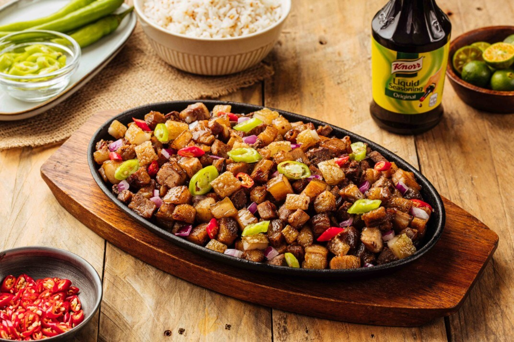

Crispy Sisig

Description
If you're looking for the perfect beer match, this Crispy sisig is it. With a delicious medley of velvety soft pork liempo, onions, and chillies tossed in tangy and savory dressing, it's spicy, tasty, and sure to be a party hit!
Ingredients
- 2 kg whole pork liempo (lechon kawali cut)
- 1 tbsp rock salt
- 2 pcs onion, cut into wedges
- water, enough to cover pork
- canola oil (for deep frying)
- 2 tbsp chopped garlic
- 1/2 kg chicken liver, cut into small cubes
- 1 cup chopped onions
- 3 -4 pcs green chillies, sliced
- 2 -4 tbsp Knorr Seasoning
- 2 tbsp calamansi juice
- ground black pepper to taste
- Knorr Liquid Seasoning
Steps
- Let's begin by getting a pot and filling it with water then add salt, onion wedges and the pork belly or lechon kawali.
- Cook until tender. Drain from the water and set aside on a plate or tray to cool and air-dry.
- Get a shallow pan and make it nice and hot.
- Pour enough oil and deep fry tenderized pork until crisp and golden brown. Let cool and chop coarsely.
- Using another pan, throw in the garlic and liver. Saute until fully cooked.
- Off heat, toss in the onions, chopped crispy pork and green chillies. Season with more Knorr Liquid Seasoning, calamansi juice and pepper.
- And that's it! Prepare to eat more than usual for you will find yourself falling in love with the goodness of this Crispy Sisig!